🏠 1. 시작하기
토양 시료 접수 대장은 토양 분석 전용 시료 접수·관리 프로그램입니다. 컴퓨터가 익숙하지 않아도 괜찮습니다. 이 설명서는 화면을 보면서 그대로 따라 하면 누구나 사용할 수 있도록 한 단계씩 안내합니다.
시료(試料)란 검사를 받기 위해 가져온 흙 한 봉지를 말합니다. 이 프로그램은 누가, 언제, 어떤 흙을 맡겼는지 기록하고 관리하는 장부입니다.
앱 실행하기
- 바탕화면에서 토양 시료 접수 대장 아이콘을 찾으세요.
- 아이콘을 마우스로 두 번 빠르게 클릭(더블 클릭)하세요.설치 파일(.exe)로 설치했다면 화면 왼쪽 아래 윈도우 시작 메뉴에서도 찾아 실행할 수 있습니다.
- 잠시 기다리면 아래와 같은 메인 화면이 나타납니다.
메인 화면 살펴보기
프로그램을 실행하면 가운데에 토양 카드가, 그 오른쪽에 토양 통계 패널이 나타납니다. 아래 그림에서 ① 통계 패널에 올해 접수된 시료 현황이 표시됩니다.
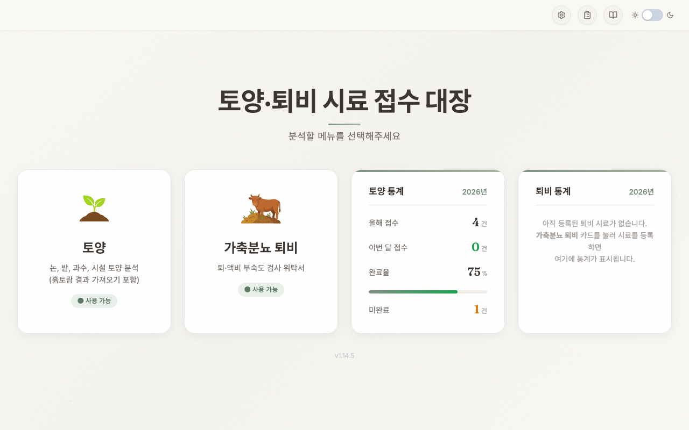
- 흙 시료를 새로 접수하려면 가운데 토양 카드를 마우스로 한 번 클릭하세요. 접수 화면으로 이동합니다. (자세한 방법은 2. 토양 시료 접수하기 참고)
- 이미 접수한 내용을 보려면 화면 위쪽의 목록 메뉴를 클릭하세요. (3. 접수 목록 조회 참고)
📊 토양 통계 패널
메인 화면 오른쪽에 올해 등록된 토양 시료 통계가 한눈에 표시됩니다. 별도 조회 없이 진행 상황을 즉시 파악할 수 있습니다.
| 지표 | 설명 |
|---|---|
| 올해 접수 | 현재 연도(예: 2026년)에 등록된 전체 시료 건수 |
| 이번 달 접수 | 접수일자 기준 이번 달 등록 건수 |
| 완료율 | 완료 토글이 켜진 비율(%) — 막대 그래프로 시각화 |
| 미완료 | 완료되지 않은 본필지 건수 (하위필지 -1, -2는 제외) |
ℹ️ 데이터가 없을 때
등록된 토양 시료가 없으면 통계 대신 "아직 등록된 토양 시료가 없습니다" 안내가 표시됩니다. 시료를 등록하면 자동으로 수치가 채워집니다.
🌱 토양
논, 밭, 과수, 시설 토양 분석. 필지별 작물·면적, 본필지/하위필지 관리
🌱 흙토람 결과 가져오기
토양 페이지 툴바의 흙토람 버튼으로 진입. 엑셀/텍스트 업로드로 검정결과를 자동 매핑하여 일괄 입력
🏷️ 라벨 인쇄
검사 결과 발송용 우편 주소 라벨 인쇄
🌙 다크 모드
메인 화면 오른쪽 상단의 달 아이콘을 클릭하면 다크 모드로 전환됩니다. 어두운 환경에서 눈의 피로를 줄여줍니다. 설정은 자동 저장되어 다음 실행 시에도 유지됩니다.
🔄 전체 동기화
메인 화면의 전체 동기화 버튼을 클릭하면 Firebase에 저장된 모든 시료 데이터를 한 번에 내려받을 수 있습니다. 새 PC에서 처음 사용할 때 유용합니다.
ℹ️ 전체 동기화 사용 시기
전체 동기화는 Firebase 설정이 완료된 상태에서만 동작합니다. 설정 방법은 8. 클라우드 동기화 섹션을 참고하세요.
💻 데스크톱 설치본 vs 🌐 웹, 무엇이 다른가요?
이 프로그램은 컴퓨터에 설치해서 쓰는 데스크톱 버전과 설치 없이 인터넷 주소로 바로 쓰는 웹 버전 두 가지가 있습니다. 시료 접수·목록·통계·라벨 인쇄·흙토람 연동 같은 핵심 기능은 두 버전이 똑같습니다. 아래 몇 가지만 차이가 있습니다.
| 기능 | 🖥️ 데스크톱(설치본) | 🌐 웹 |
|---|---|---|
| 시료 접수·수정·삭제 | ✅ 사용 | ✅ 사용 |
| 목록·통계·라벨 인쇄 | ✅ 사용 | ✅ 사용 |
| 흙토람 가져오기·내보내기 | ✅ 사용 | ✅ 사용 |
| 클라우드 동기화 | ✅ 사용 | ✅ 사용 |
| 주소 자동완성(검색) | ✅ 사용 | ❌ 주소 직접 입력 |
| 파일 자동저장 | ✅ 입력 즉시 컴퓨터에 백업 | ❌ 클라우드 동기화로 대체 |
| 자동 업데이트 | ✅ 새 버전 자동 설치 | ❌ (새로고침하면 항상 최신) |
ℹ️ 어떤 버전을 쓰면 좋을까요?
매일 접수를 입력하는 담당자는 데스크톱 설치본을 권장합니다. 주소 자동완성과 파일 자동저장이 입력 속도와 안전성을 높여줍니다. 설치가 어려운 PC이거나 잠깐 조회만 할 때는 웹 버전이 편리합니다. 두 버전은 같은 데이터를 함께 사용하므로, 웹에서는 데이터 보호를 위해 8. 클라우드 동기화를 켜두시길 권장합니다.
📝 2. 토양 시료 접수하기
흙 시료가 들어오면 이 화면에서 누가·언제·어떤 흙을 맡겼는지 기록합니다. 메인 화면의 토양 카드를 클릭하면 접수 화면이 열립니다. 화면 왼쪽에는 위에서부터 토양 시료 정보(경지구분 1차·구분·목적) → 기본 정보(접수번호·날짜·신청인) → 비고 순서로, 오른쪽에는 필지 정보(흙을 채취한 땅)를 입력합니다.
① 접수번호·접수일자·접수방법 입력
아래 그림의 ①②③ 번호는 기본 정보 묶음(화면 왼쪽, 토양 시료 정보 아래)에 있는 칸입니다. 번호 순서대로 따라 하세요.
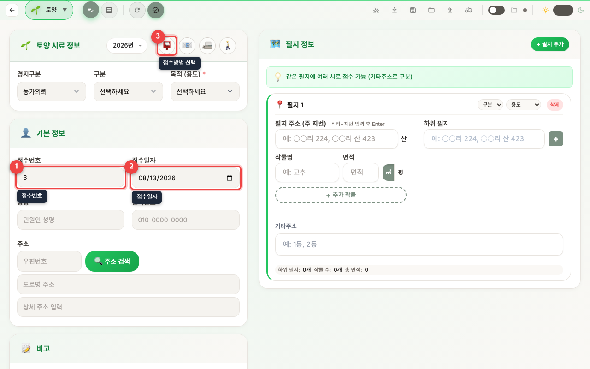
- ① 접수번호 칸은 자동으로 채워집니다. 고치지 않아도 됩니다. "연도-일련번호" 형식으로 만들어집니다(예: 2026-0001).
- ② 접수일자 칸을 확인하세요. 오늘 날짜가 자동으로 들어가 있습니다. 다른 날짜로 바꾸려면 칸을 클릭해 달력에서 고르세요.
- ③ 접수방법(수령방법)을 그림 아이콘 버튼 중에서 하나 클릭하세요. (우편 / 이메일 / 팩스 / 직접방문)
- 성명 칸에 흙을 맡긴 분의 이름을 입력하세요.
- 전화번호 칸에 숫자만 입력하면 됩니다. 010으로 시작하는 번호를 누르면 010-0000-0000 모양으로 자동 정리됩니다.
- 주소는 직접 입력해도 되지만, 옆의 "주소 검색" 버튼을 누르면 더 쉽습니다.검색 창이 뜨면 도로명이나 동·리 이름을 입력하고, 나오는 목록에서 맞는 주소를 클릭하세요. 우편번호와 주소가 자동으로 채워집니다.
- 경지구분 1차를 드롭다운에서 고르세요. 처음에는 농가의뢰로 정해져 있으니, 특별히 다른 분류가 아니면 그대로 두면 됩니다.
- 구분에서 흙의 종류를 고르세요. (논 / 밭 / 과수 / 시설 / 임야 / 성토)
- 목적(용도)을 반드시 하나 고르세요. 이 칸은 비워두면 등록이 안 됩니다. (일반재배 / 무농약 / 유기 / GAP / 저탄소)
경지구분 1차 선택
토양 시료 정보 줄에는 경지구분 1차 · 구분 · 목적(용도)가 한 줄로 나란히 있으며, 이 묶음이 접수 화면 맨 위에 옵니다. 아래 그림의 ①번 위치(줄 맨 앞)에서 경지구분 1차를 드롭다운으로 고릅니다.
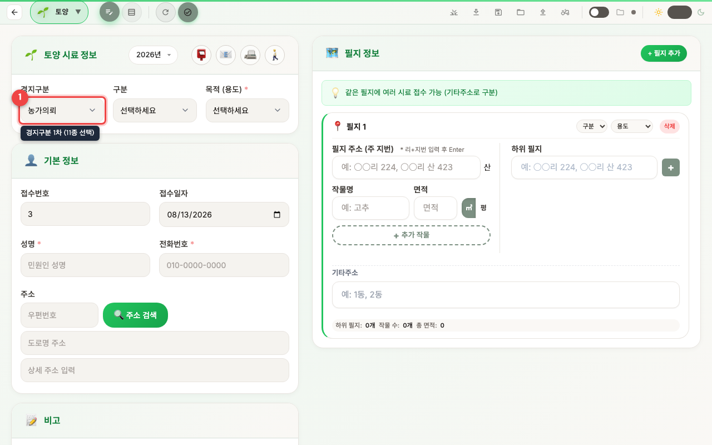
드롭다운에서 고를 수 있는 값은 다음 12가지입니다.
개량제 · 전략 · 직불 · 자체 · 기타 · 친환경 · 유기농 · 무농약 · GAP · 농가의뢰(기본값) · 대표필지 · 공익직불제
경지구분 1차란 농촌진흥청 토양검정업무시스템에 등록할 때 쓰는 경지구분 분류입니다. 어떤 분류를 고르느냐에 따라 흙토람에 등록되는 형태가 달라지므로, 시료의 성격에 맞는 값을 골라 주세요.
💡 잘 모를 때는 그대로 두세요
어떤 분류인지 확실하지 않으면 기본값인 농가의뢰로 두면 됩니다. 농민이 직접 의뢰한 일반 시료는 대부분 농가의뢰에 해당합니다.
필지(筆地)란 흙을 채취한 땅 한 구획을 말합니다. 한 사람이 여러 땅에서 흙을 가져왔다면 필지를 여러 개 추가할 수 있습니다.
② 필지 추가하고 등록 완료하기
- 화면 오른쪽의 "+ 필지 추가" 버튼을 클릭하세요. 흙을 채취한 땅 정보를 적는 칸이 나타납니다. (필지 입력 항목은 아래 표 참고)
- 땅이 여러 개라면 "+ 필지 추가" 버튼을 다시 눌러 칸을 더 만드세요.
- 모든 입력을 마쳤으면 아래 그림 ①번 위치의 초록색 "등록" 버튼을 클릭하세요. 접수가 완료되고 목록에 저장됩니다.
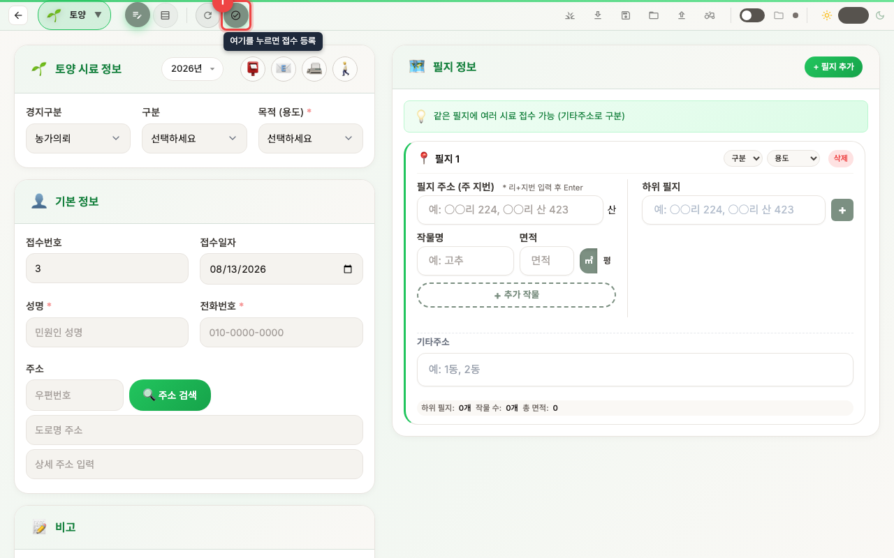
⚠️ 등록 버튼을 꼭 누르세요
"등록" 버튼을 누르기 전까지는 저장되지 않습니다. 입력만 하고 다른 화면으로 넘어가면 내용이 사라질 수 있습니다.
필지 정보 입력
하나의 접수 건에 여러 필지를 등록할 수 있습니다. "+ 필지 추가" 버튼을 눌러 필지를 하나씩 추가하세요. 필지마다 본필지와 하위필지(같은 필지에 여러 시료가 접수될 때)를 별도로 입력할 수 있습니다.
| 항목 | 설명 |
|---|---|
| 필지 주소 (주 지번) | 리·지번 입력 후 Enter (예: 내성리 224, 내성리 산 423). 설정에서 지정한 기본 시·도를 기준으로, 리 이름만 입력해도 읍면리가 자동완성됩니다. |
| 하위 필지 | 같은 필지에 추가 시료가 있을 때 입력. 접수번호가 자동으로 -1, -2 식으로 부여됩니다. |
| 작물명 | 예: 고추. "+ 추가 작물" 버튼으로 같은 필지에 여러 작물을 등록할 수 있습니다. |
| 면적 | 숫자만 입력하면 천 단위 콤마가 자동 적용됩니다 (단위: 평). |
| 기타 주소 | 예: 1동, 2동 등 동·번지 외 추가 정보를 메모로 입력할 수 있습니다. |
ℹ️ 본필지 vs 하위필지
접수번호가 503은 본필지, 503-1·503-2는 하위필지입니다. 완료 토글은 본필지·하위필지가 그룹으로 함께 동작하며, 메인 화면 통계의 "미완료" 카운트는 본필지만 집계합니다.
💡 초기화 버튼
"초기화" 버튼을 클릭하면 폼이 비워지지만, 접수번호와 접수일자는 유지됩니다. 같은 날 여러 건을 연속 접수할 때 편리합니다.
📋 3. 접수 목록 조회
지금까지 접수한 내용을 한눈에 모아 보는 화면입니다. 화면 위쪽의 "목록" 메뉴를 클릭하면 열립니다.
목록 열기
- 화면 위쪽 메뉴에서 "목록"을 마우스로 클릭하세요. 아래 그림처럼 접수한 시료들이 표로 나타납니다.
- 표에서 한 줄이 시료 한 건입니다. 접수번호·성명·주소·구분 등이 한 줄에 보입니다.
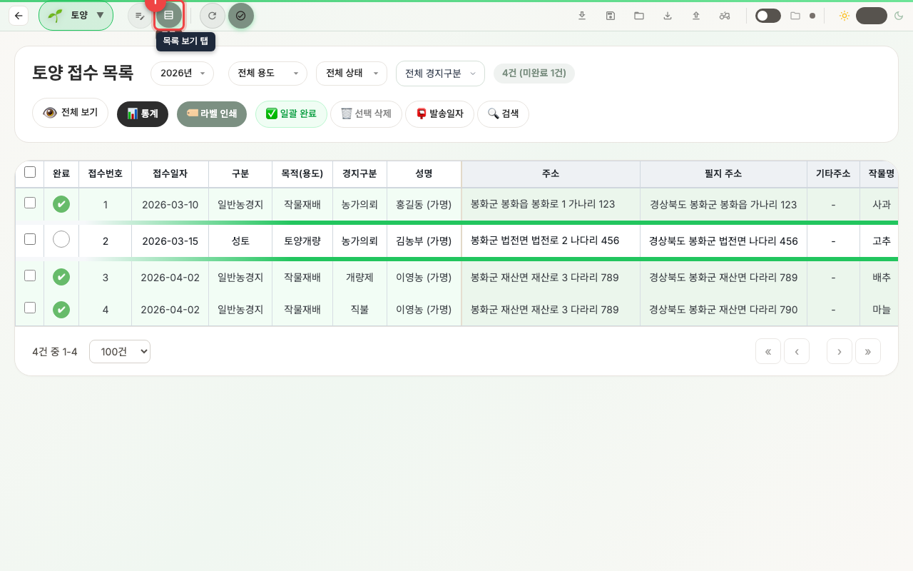
연도별 조회
- 화면 위쪽의 연도 드롭다운(예: "2026년"이라고 쓰인 칸)을 클릭하세요.
- 보고 싶은 연도를 목록에서 고르면 그 해에 접수한 시료만 표시됩니다.작년에 입력한 내용이 안 보인다면 연도가 올해로 되어 있기 때문입니다. 연도를 바꿔 보세요.
경지구분 1차 드롭다운으로 나눠 보기
목록 위쪽에는 경지구분 1차 드롭다운이 있습니다. 분류를 하나 고르면 그 분류로 접수한 시료만 보입니다. "전체 경지구분"을 고르면 모든 시료가 함께 나옵니다.
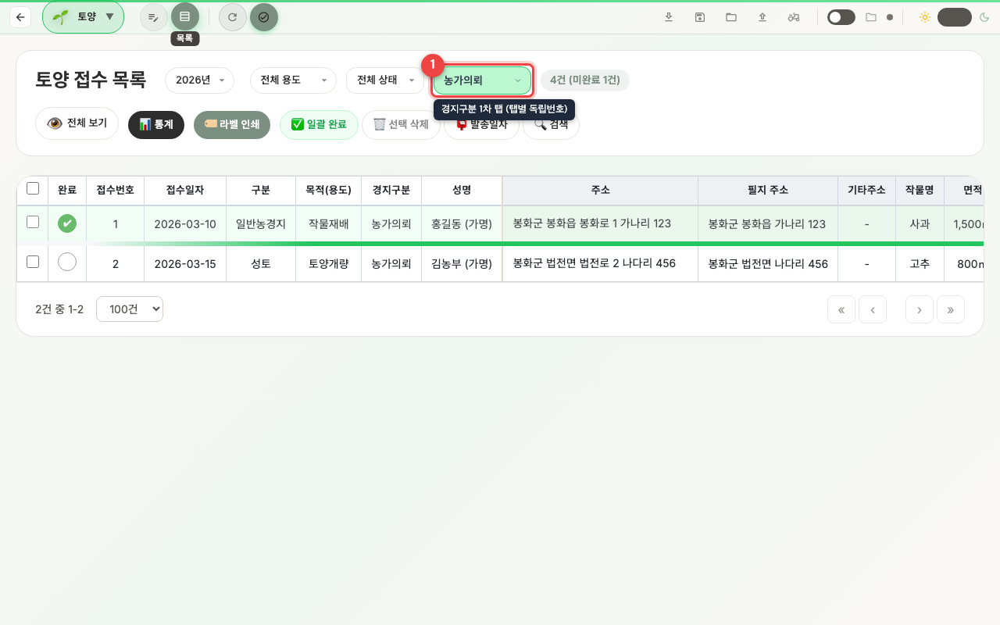
- 목록 위쪽의 경지구분 1차 드롭다운에서 보고 싶은 분류(예: 개량제·직불·농가의뢰)를 고르세요.
- 고른 분류의 시료만 표에 나타납니다. 다시 모두 보려면 "전체 경지구분"을 고르세요.
- 화면 위쪽 통계와 엑셀 내보내기도 지금 고른 경지구분을 기준으로 동작합니다.
ℹ️ 접수번호는 경지구분별로 따로 매겨집니다
접수번호는 경지구분마다 1번부터 따로 부여됩니다. 즉 개량제 1·2…, 직불 1·2…처럼 분류별로 번호가 독립적으로 매겨집니다. 그래서 분류가 다르면 같은 번호가 또 나올 수 있습니다.
⚠️ 예전에 입력한 자료는 모두 "농가의뢰"로 보입니다
경지구분 1차 기능이 생기기 전에 입력해 둔 시료는 모두 기본값인 농가의뢰 분류에 들어가 있습니다. 다른 분류를 드롭다운에서 골랐을 때 안 보인다면, 농가의뢰나 "전체 경지구분"을 선택해서 확인하세요.
필터로 원하는 것만 보기
필터는 보고 싶은 것만 골라 보여주는 기능입니다.
| 필터 종류 | 고를 수 있는 값 |
|---|---|
| 용도 필터 | 전체 / 일반재배 / 무농약 / 유기 / GAP / 저탄소 |
| 상태 필터 | 전체 / 미완료 / 완료 |
🔍 고급 검색
- 화면 위쪽의 돋보기(검색) 아이콘 버튼을 클릭하세요. 검색 조건을 적는 창이 열립니다.
- 찾고 싶은 조건을 입력하세요. 아래 네 가지 중 아는 것만 적어도 됩니다.
· 접수일자 범위: 시작일과 종료일을 정해 그 기간만 검색
· 성명: 의뢰인 이름으로 검색
· 접수번호 범위: 시작 번호와 끝 번호 지정
· 지번 주소: 리 이름이나 지번으로 검색 - 검색 버튼을 누르면 조건에 맞는 시료만 표에 나타납니다.
테이블 보기 옵션
기본 보기는 중요한 칸만 보여줘 깔끔합니다. 전체 보기는 우편번호·비고·발송일자 등 모든 칸을 보여줍니다. 화면 위쪽 버튼으로 전환합니다.
페이지 나누기
시료가 많으면 여러 쪽으로 나누어 보여줍니다. 한 쪽에 몇 건을 볼지 50건 / 100건 / 200건 / 500건 중에서 고를 수 있습니다.
완료 표시하기
- 검사를 끝낸 시료는 그 줄 왼쪽의 네모 칸(체크박스)을 클릭해 체크하세요.
- 상태 필터를 "미완료"로 바꾸면 아직 검사하지 않은 시료만 모아 볼 수 있습니다.
🌱 4. 흙토람 결과 가져오기
흙토람은 농촌진흥청이 운영하는 토양 검정 결과 시스템입니다. 검사가 끝난 토양 분석 수치(pH·유기물 등)를 엑셀로 받아, 이 프로그램의 시료에 한꺼번에 채워 넣을 수 있습니다.
흙토람 화면 열기
- 토양 화면 위쪽 도구 모음에서 "흙토람" 버튼을 찾아 클릭하세요. 아래 그림의 표시된 위치에 있습니다.
- 흙토람 검정결과를 가져오는 화면이 열립니다. 엑셀 파일을 올리거나 표를 붙여넣는 두 가지 방법을 쓸 수 있습니다.
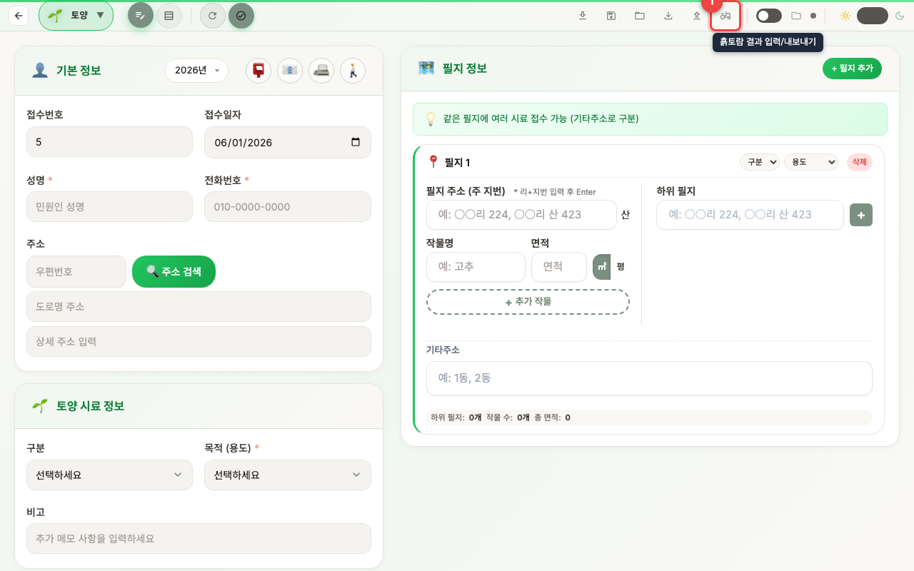
⚠️ 먼저 토양 시료를 등록하세요
흙토람 결과는 이미 접수해 둔 토양 시료에 접수번호를 기준으로 채워집니다. 접수한 시료가 하나도 없으면 "토양 접수 데이터가 없습니다"라는 안내만 표시됩니다. 2. 토양 시료 접수하기를 먼저 끝내세요.
흙토람 리스트 화면 살펴보기
흙토람 화면을 열면 아래처럼 표 하나에 모든 시료가 한 줄씩 나타납니다. 앞서 접수해 둔 토양 시료가 자동으로 줄마다 채워지므로, 따로 옮겨 적을 필요가 없습니다. 화면 오른쪽 위에는 전체 건수가 표시됩니다.
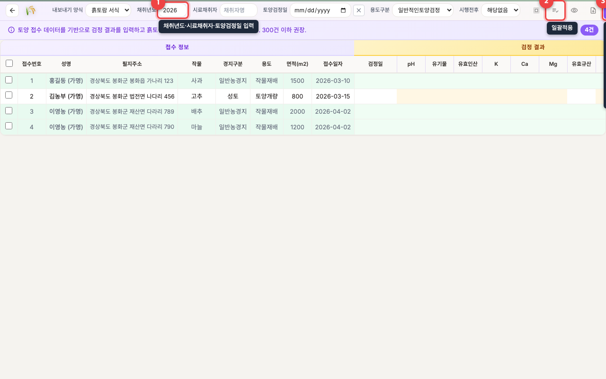
접수 정보는 표의 왼쪽(연두색) 묶음입니다. 접수번호·성명·필지주소·작물·경지구분·용도·면적·접수일자처럼 내가 접수할 때 적은 내용이라 이미 채워져 있습니다.
검정 결과는 표의 오른쪽(노란색) 묶음입니다. 검정일·pH·유기물·유효인산·K·Ca·Mg·유효규산 등 흙토람에서 받은 검사 수치가 들어갈 자리입니다. 처음에는 비어 있고, 결과를 가져오면 이 칸들이 채워집니다.
검정 정보 한꺼번에 입력하기 (일괄적용)
같은 날 채취하거나 같은 사람이 채취한 시료라면, 한 줄씩 적지 말고 여러 줄에 한 번에 넣을 수 있습니다. 위 그림의 ①·② 표시와 함께 보세요.
- 화면 맨 위 도구 모음(①)에서 채취년도·시료채취자·토양검정일을 적고, 용도구분은 목록에서 골라 주세요.
- 표 왼쪽 끝의 네모 칸(체크박스)을 눌러 적용할 줄을 고릅니다. 맨 위 머리글의 네모를 누르면 전체 선택됩니다.
- 오른쪽 위 "일괄적용" 버튼(②)을 누르면, 골라 둔 줄에 위에서 적은 채취년도·시료채취자·토양검정일·용도구분이 한꺼번에 들어갑니다.
💡 칸이 안 보이거나 모두 고르고 싶을 때
머리글 왼쪽 끝의 네모를 누르면 모든 줄을 한 번에 선택/해제할 수 있습니다. 화면이 좁아 일부 칸이 가려졌다면 도구 모음의 "전체보기"(눈 모양) 버튼으로 숨긴 칼럼까지 펼쳐 볼 수 있습니다.
📊 검정 결과 가져오기 (엑셀로 결과 입력)
흙토람에서 내려받은 검사 수치 엑셀을 시료에 채워 넣는 단계입니다. 화면 위쪽 도구 모음의 "엑셀 가져오기" 버튼을 누르면 아래 입력 창(작은 창)이 열립니다. 이 창에서 엑셀의 어느 칸이 어떤 검정 항목인지 연결해 줍니다.
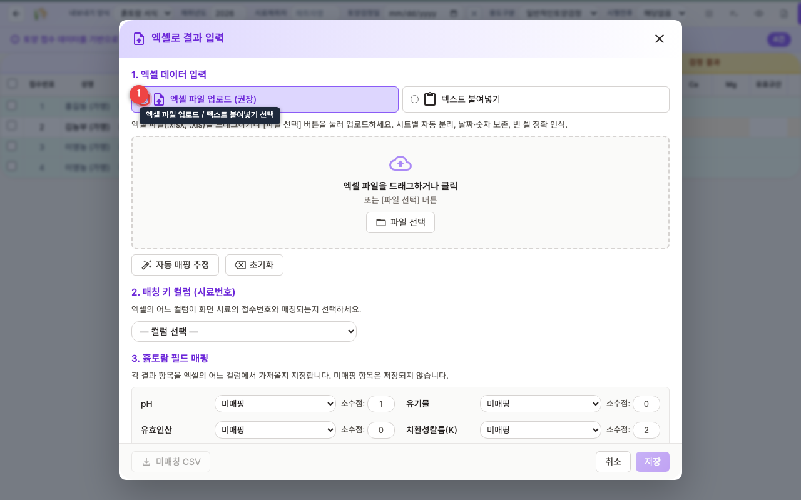
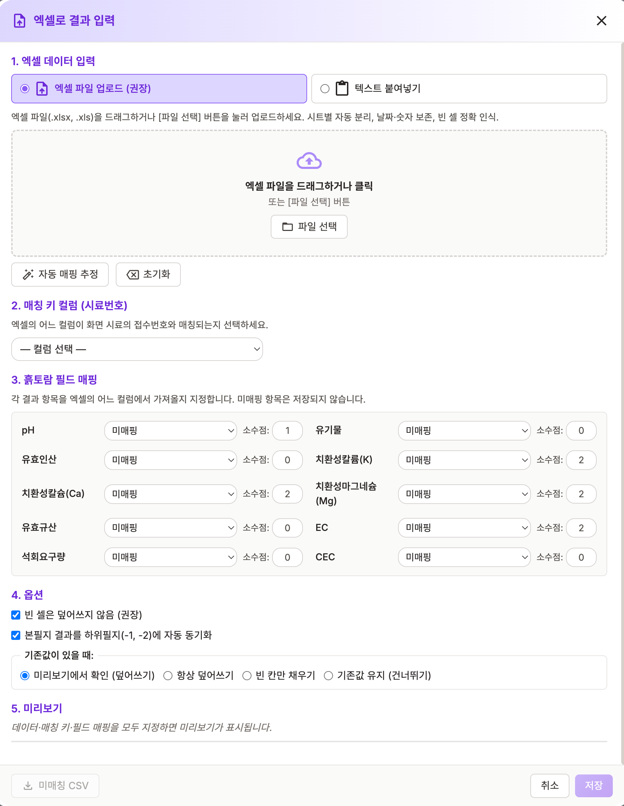
입력 순서
- 1. 엑셀 데이터 입력
- 엑셀 파일 업로드 (권장): .xlsx / .xls 파일을 드래그앤드롭하거나 [파일 선택] 버튼으로 업로드. 시트 자동 분리, 빈 셀 정확히 인식.
- 텍스트 붙여넣기: 엑셀에서 복사한 표를 그대로 붙여넣기.
- 2. 매칭 키 컬럼 (시료번호): 엑셀의 어느 컬럼이 시료의 접수번호와 매칭되는지 선택합니다.
- 3. 흙토람 필드 매핑: pH, 유효인산, 치환성칼슘/마그네슘/칼륨, 유기물, 유효규산, EC, 석회요구량, CEC 등 검정 항목을 엑셀 컬럼과 연결합니다. "자동 매핑 추정" 버튼을 누르면 헤더 패턴을 기반으로 30+ 항목을 자동 인식합니다. 항목별 소수점 자릿수도 지정할 수 있습니다.
- 4. 옵션
- 빈 셀은 덮어쓰지 않음 (권장): 엑셀의 빈 칸은 무시.
- 본필지 결과를 하위필지(-1, -2)에 자동 동기화: 같은 접수번호 그룹에 결과 자동 반영.
- 기존값이 있을 때: 미리보기/항상 덮어쓰기/빈 칸만 채우기/기존값 유지 4가지 정책 선택.
- 5. 미리보기: 매칭 키와 매핑을 모두 지정하면 미리보기가 표시됩니다. ✅매칭 / ⚠️미매칭 / 🔵충돌 / ⚠️범위초과 통계와 셀 단위 변경 표시를 확인할 수 있습니다.
- 확인 후 저장 버튼을 누르면 토양 시료에 결과가 일괄 반영됩니다.
💡 미매칭 행 다운로드
접수번호가 토양 시료 목록에 없는 행은 자동으로 미매칭 처리됩니다. 미리보기 화면 하단의 "미매칭 CSV" 버튼으로 해당 행만 별도 다운로드할 수 있습니다 (UTF-8 BOM 포함, Excel 한글 인식).
ℹ️ 안전 한도
엑셀 파일은 50MB hard limit, XSS 방지, 매칭 키 중복 경고, 모드 격리 등 안전 가드가 적용되어 있습니다.
서식 골라서 내보내기 (흙토람 서식 / 공익직불제)
흙토람 사이트에 올릴 일괄입력 서식 파일(.xlsx)을 이 프로그램에서 바로 만들 수 있습니다. 리스트 화면 위쪽의 "내보내기 양식" 드롭다운에서 만들 서식을 먼저 고른 뒤, 오른쪽의 "내보내기" 버튼(앞 그림의 ③)을 누르면 표에 있는 시료들이 고른 양식에 맞춰 엑셀로 저장됩니다.
- 흙토람 서식 — 흙토람 사이트의 일괄입력 양식입니다. 만들어진 파일을 흙토람 사이트에 그대로 올리면 됩니다. (기본값)
- 공익직불제 — 공익직불제 이행점검용 서식입니다. 접수 목록에서 경지구분을 공익직불제로 등록한 시료의 검정값·경영체등록번호·차수·기준년도 등이 공익직불제 양식에 맞춰 채워집니다.
내보내기 양식 드롭다운 — 리스트 화면 위쪽 도구 줄에 있는 선택 칸입니다. 흙토람 서식과 공익직불제 중 하나를 고른 상태에서 "내보내기" 버튼을 누르면 그 양식으로 파일이 만들어집니다.
ℹ️ 한 번에 300건 이하 권장
한 번에 너무 많은 시료를 내보내면 흙토람 사이트에서 오류가 날 수 있습니다. 300건 이하로 나누어 내보내는 것을 권장합니다.
💾 5. 데이터 관리
접수한 내용을 고치거나, 엑셀로 저장하거나, 한꺼번에 등록하는 등 데이터를 다루는 방법을 모읍니다. 아래 그림은 ① 엑셀 내보내기, ② 엑셀 서식 다운로드 버튼의 위치를 보여줍니다.
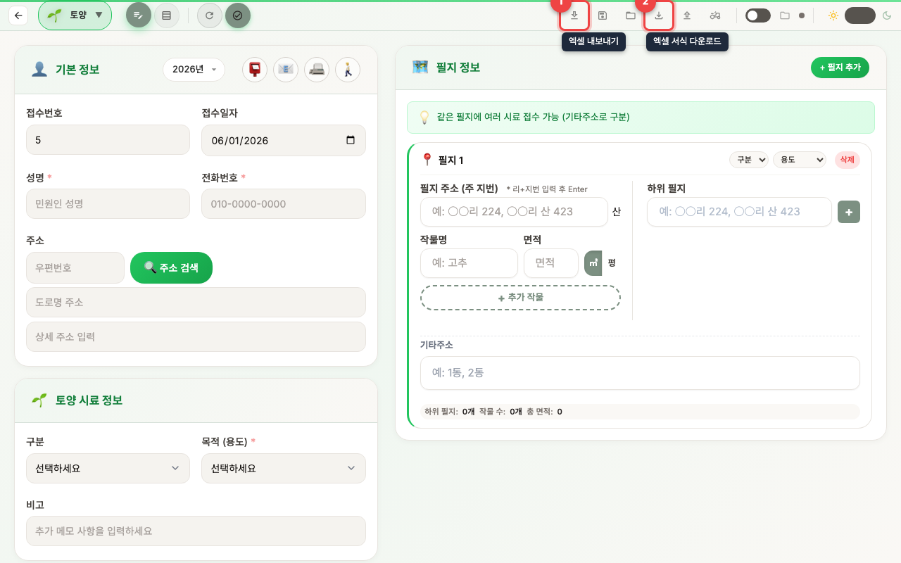
내용 고치기 (수정)
- 목록에서 고치고 싶은 시료 줄의 "수정" 버튼을 클릭하세요.
- 접수 화면에 그 시료의 내용이 그대로 채워져 나타납니다. 틀린 칸을 고치세요.
- "등록"(또는 "수정 완료") 버튼을 눌러 저장하세요.
지우기 (삭제)
- 한 건만 지우려면 그 줄의 "삭제" 버튼을 클릭하세요.
- 여러 건을 한꺼번에 지우려면 지울 줄들의 네모 칸(체크박스)을 모두 체크한 뒤 위쪽 "선택 삭제" 버튼을 클릭하세요.
⚠️ 지운 데이터는 되돌릴 수 없습니다
한 번 삭제한 내용은 복구할 수 없습니다. 지우기 전에 "JSON 저장"이나 "엑셀 내보내기"로 백업(따로 저장)해 두는 것을 권장합니다.
👆 같은 이름 한꺼번에 고르기
목록에서 성명(이름)을 클릭하면 같은 이름의 시료가 한꺼번에 선택됩니다. 한 사람이 여러 건을 맡긴 경우, 이렇게 골라서 삭제·발송일자 입력·라벨 인쇄를 한 번에 처리할 수 있습니다.
📮 발송일자 한꺼번에 입력
- 발송일을 적을 시료들의 체크박스를 체크하세요.
- 위쪽 "발송일자" 버튼을 클릭하고 날짜를 고르면, 선택한 시료 모두에 그 날짜가 입력됩니다.
📥 엑셀로 내보내기
접수한 내용을 엑셀 파일(.xlsx)로 저장하는 기능입니다. (위 그림 ①번 버튼)
- 전체를 내보내려면 아무것도 체크하지 말고, 일부만 내보내려면 원하는 줄의 체크박스를 체크하세요.
- 위쪽 "엑셀 내보내기" 버튼을 클릭하세요. 엑셀 파일이 만들어져 저장됩니다.지금 적용된 필터·검색 조건이 그대로 반영됩니다.
💾 JSON 저장/불러오기
JSON 저장: 현재 연도 데이터를 JSON 파일로 저장합니다. 다른 PC로 데이터를 이전하거나 백업할 때 사용합니다.
JSON 불러오기: 저장한 JSON 파일에서 데이터를 복원합니다.
🔁 자동 저장 데스크톱 앱 전용
상단 네비게이션의 자동 저장 토글을 켜면 데이터가 5초마다 자동 저장됩니다. 이 기능은 설치형 데스크톱 앱에서만 보입니다. 웹 브라우저에서는 폴더 선택이 지원되지 않아 표시되지 않을 수 있습니다.
자동 저장 설정
- 상단 네비게이션의 자동 저장 토글을 켭니다
- 폴더 아이콘을 클릭하여 저장 폴더를 선택합니다
- 이후 데이터 변경 시 자동으로 JSON 파일이 저장됩니다
- 저장 상태가 아이콘으로 표시됩니다 (저장 중 / 저장됨 / 대기 중)
ℹ️ 자동 저장 파일
자동 저장 파일은 선택한 폴더에 auto-save-{시료타입}-{연도}.json 형식으로 저장됩니다. 이 파일은 앱 실행 시 자동으로 불러올 수 있습니다.
📥 6. 엑셀로 한꺼번에 등록 (가져오기)
시료가 많을 때 한 건씩 손으로 입력하지 않고, 엑셀 파일이나 표를 한꺼번에 불러와 등록하는 방법입니다. 예를 들어 50건·100건처럼 많은 시료를 미리 엑셀에 정리해 두었다면, 이 기능으로 단번에 등록할 수 있습니다.
가져오기(Import)란 다른 파일에 정리해 둔 내용을 이 프로그램 안으로 한꺼번에 옮겨 담는 일을 말합니다. 반대로 "내보내기"는 이 프로그램의 내용을 엑셀 파일로 빼내는 일입니다.
가져오기 창 열기
- 목록 화면 위쪽의 "가져오기" 버튼을 마우스로 클릭하세요.
- 아래 그림과 같은 가져오기 창(작은 창)이 열립니다. 이 창에서 ①~⑤ 순서대로 진행하면 됩니다.
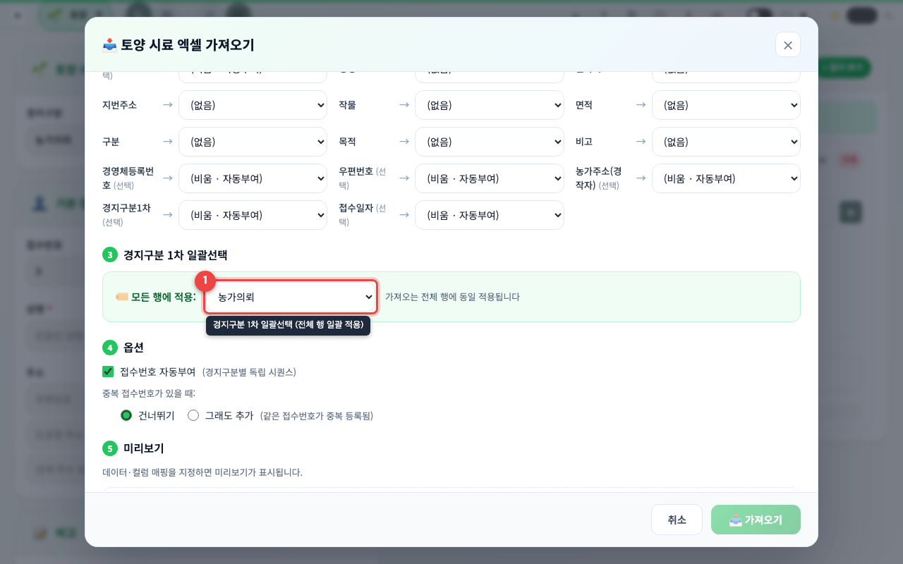
① 엑셀 데이터 입력
먼저 등록할 데이터를 창에 넣습니다. 두 가지 방법 중 편한 것을 고르세요.
- 엑셀 파일 업로드 (권장) — 준비한 .xlsx · .xls · .csv 파일을 창 안으로 끌어다 놓거나(드래그앤드롭), [파일 선택] 버튼을 눌러 파일을 고릅니다.파일을 올리면 빈 칸까지 정확히 인식되어 가장 안전합니다.
- 텍스트 붙여넣기 — 엑셀에서 표 영역을 마우스로 긁어 복사(Ctrl+C)한 뒤, 창의 입력 칸에 그대로 붙여넣기(Ctrl+V) 합니다.표의 맨 윗줄이 제목 줄(헤더)이라면 "첫 행 헤더" 체크 칸을 켜 주세요.
② 컬럼 매핑
엑셀의 각 열(세로 칸)이 접수 항목 중 무엇인지 짝지어 주는 단계입니다. 연결할 수 있는 접수 항목은 접수번호 · 성명 · 연락처 · 지번주소 · 작물 · 면적 · 구분 · 목적(용도) · 비고이며, 공익직불제용으로 경영체등록번호 · 농가주소 · 접수일자도 연결할 수 있습니다.
- [자동 매핑 추정] 버튼을 먼저 누르세요. 엑셀의 제목 줄(헤더) 이름을 보고 알맞은 항목에 자동으로 연결해 줍니다. (파일을 올리면 자동으로 한 번 실행됩니다.)
- 자동으로 잘못 연결된 칸이 있으면 해당 항목의 드롭다운을 눌러 직접 올바른 열로 바꿔 주세요.
- 접수번호 열은 비워 두어도 됩니다. 비워 두면 아래 ④ 옵션에 따라 자동으로 번호가 매겨집니다.
컬럼 매핑이란 "엑셀의 이 칸 = 프로그램의 이 항목"이라고 짝을 지어 주는 일입니다. 예를 들어 엑셀의 "이름" 열을 프로그램의 "성명" 항목에 연결해 주면, 그 열의 내용이 성명 칸으로 들어갑니다.
💡 기관마다 다른 제목 줄도 자동으로 알아봅니다
기술센터마다 엑셀 제목(헤더)을 조금씩 다르게 적습니다. [자동 매핑 추정]은 같은 뜻의 여러 이름을 폭넓게 알아보고 알맞은 항목에 연결합니다. 예를 들어:
- 성명 ← 이름 · 성함 · 농가명 · 경영체명 · 농업인 · 신청인 · 대표자 · 경작자 · 소유자 …
- 연락처 ← 전화 · 전화번호 · 휴대폰 · 핸드폰 · 휴대전화 …
- 지번주소 ← 주소 · 소재지 · 필지 · 경작지 · 농지주소 …
- 농가주소 ← 경영체주소 · 경작자주소 · 도로명주소 · 거주지주소 …
- 접수일자 ← 조사일자 · 조사일 · 채취일 · 의뢰일 · 신청일 …
이름이 비슷한 항목(예: 지번주소·농가주소)도 서로 헷갈리지 않게 가장 알맞은 칸으로 연결됩니다. 그래도 자동 연결이 어긋났다면 드롭다운으로 바로잡으면 됩니다.
③ 경지구분 1차 일괄선택
여기서 고른 경지구분 1차가 이번에 가져오는 모든 행에 똑같이 적용됩니다. (위 그림의 ③번 위치) 처음에는 기본값 농가의뢰로 정해져 있으니, 특별히 다른 분류가 아니면 그대로 두면 됩니다.
④ 옵션
등록 방식을 세밀하게 정하는 칸입니다.
- 접수번호 자동부여 — 켜 두면 접수번호를 비워 둔 행에 대해 경지구분별로 1번부터 차례대로 번호를 매겨 줍니다.
- 중복 처리 — 같은 경지구분 1차에 이미 같은 접수번호가 있을 때 건너뛰기(그 행은 등록하지 않음) 할지, 그래도 추가(같은 번호로 한 건 더 등록) 할지 고릅니다.
ℹ️ 중복은 "경지구분별 접수번호"로 판정합니다
같은 연도 안에서 경지구분 1차가 같고 접수번호(본번)도 같을 때만 중복으로 봅니다. 경지구분이 다르면 접수번호가 같아도 중복이 아닙니다(예: 개량제 1번과 직불 1번은 서로 별개). 성명·주소는 중복 판정에 쓰지 않습니다. 또한 위 접수번호 자동부여를 켜 두면 경지구분별로 비어 있는 다음 번호를 매기므로 중복이 생기지 않습니다.
⑤ 미리보기 후 가져오기
마지막으로 어떤 시료가 등록될지 표로 미리 보여 줍니다. 각 행 앞에는 색깔 배지가 붙어 상태를 알려 줍니다.
신규(초록) · 중복(노랑) · 오류(빨강) 배지 — 신규(초록)는 새로 등록될 정상 행, 중복(노랑)은 같은 경지구분에 이미 같은 접수번호가 있어 ④ 옵션에 따라 건너뛰거나 한 건 더 추가될 행, 오류(빨강)는 필수 항목이 비었거나 형식이 맞지 않아 등록되지 않는 행입니다.
- 표에서 신규·중복·오류 건수를 확인하세요. 빨강(오류) 행이 있으면 엑셀을 고친 뒤 다시 가져오는 것이 좋습니다.
- 확인이 끝나면 [가져오기] 버튼을 누르세요. 표에 보인 행들이 한꺼번에 목록에 등록됩니다.
💡 오류(빨강) 행만 따로 받아 고치기
미리보기에 오류 행이 있으면 창 아래에 "⚠️ 오류 행 CSV (N건)" 버튼이 나타납니다. 이 버튼을 누르면 오류 행만 CSV 파일(.csv)로 저장됩니다(엑셀에서 바로 열립니다). 파일에는 성명·연락처·지번주소 등과 함께 오류 사유(예: "성명·주소 없음")가 들어 있으니, 빠진 칸을 채운 뒤 그 파일을 다시 가져오기 하면 됩니다. (엑셀에서 한글이 깨지지 않게 저장됩니다.)
💡 접수번호는 비워두면 자동으로 채워집니다
접수번호 칸(열)을 비워두면 경지구분별로 1번부터 자동 부여됩니다. 직접 번호를 적을 필요 없이, ③에서 경지구분만 골라 두면 알아서 순서대로 매겨집니다.
💡 처음이라면 엑셀 서식을 받아 쓰세요
목록 화면의 "엑셀 서식 다운로드" 버튼으로 표준 양식을 받아, 그 양식에 데이터를 채워 넣으세요. 표준 서식을 쓰면 ② 컬럼 매핑이 자동으로 맞춰져 가장 쉽습니다. 양식이 아닌 임의의 엑셀 파일은 ② 단계에서 직접 연결해 주어야 합니다.
⚠️ "그래도 추가"를 고를 때 주의하세요
④ 옵션에서 "그래도 추가(덮어쓰기)"를 고르면, 같은 경지구분에 같은 접수번호가 있어도 그 행을 한 건 더 등록합니다(기존 행을 지우지는 않습니다). 그러면 같은 접수번호가 두 건이 되어 목록에 중복으로 보일 수 있으니, 보통은 기본값인 "건너뛰기"를 권장합니다. 가져오기 전에 "JSON 저장"으로 백업해 두면 더 안전합니다.
📊 7. 통계 및 라벨 인쇄
접수한 시료가 종류별·월별로 몇 건인지 한눈에 보고, 검사 결과를 보낼 주소 라벨을 인쇄하는 방법입니다.
📊 통계 보기
- 목록 화면 위쪽의 "통계" 버튼을 클릭하세요. 통계 창이 열립니다.
- 아래 표의 항목별로 접수 건수가 그래프와 숫자로 표시됩니다.
참고: 메인 화면 오른쪽의 토양 통계 패널(1. 시작하기의 ① 영역)에서도 올해 접수·이번 달 접수·완료율을 별도 조회 없이 바로 볼 수 있습니다.
| 통계 항목 | 내용 |
|---|---|
| 구분별 | 논, 밭, 과수, 시설 등 구분별 접수 건수 |
| 목적별 | 일반재배, 무농약, 유기, GAP, 저탄소별 접수 건수 |
| 월별 | 1월~12월 월별 접수 건수 추이 |
| 수령방법별 | 우편, 이메일, 팩스, 직접방문별 건수 |
🏷️ 라벨 인쇄
검사 결과를 우편으로 보낼 때 봉투에 붙일 주소 라벨을 인쇄합니다. 아래 그림이 라벨 인쇄 화면입니다.
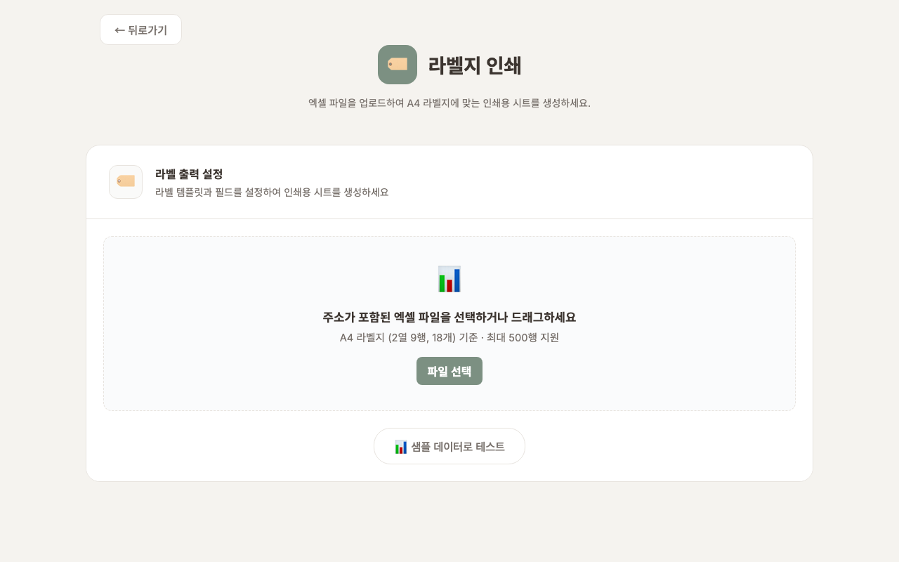
- 시료 목록에서 라벨을 만들 시료들의 체크박스를 체크하세요.
- 위쪽 "라벨 인쇄" 버튼을 클릭하세요. 인쇄 미리보기 화면이 열립니다.
- 인쇄될 주소 목록을 눈으로 확인하세요. 같은 주소가 여러 건이면 자동으로 한 장만 만들어집니다.
- 라벨지를 이미 일부 사용했다면 시작 위치를 그 다음 빈 칸으로 골라 종이를 아끼세요.
- "인쇄" 버튼을 클릭하면 프린터로 출력됩니다.
💡 라벨지 규격
A4 라벨지 2열 9행 (18매) 템플릿을 사용합니다. 동일 주소의 중복은 자동으로 제거됩니다.
☁️ 8. 클라우드 동기화
Firebase 클라우드 동기화를 설정하면 여러 PC에서 같은 데이터를 사용할 수 있습니다. 인터넷이 연결되면 자동으로 데이터가 동기화됩니다.
클라우드 동기화란? 내 컴퓨터의 자료를 인터넷 저장 공간(클라우드)에 자동으로 보관하고, 다른 컴퓨터에서도 같은 자료를 그대로 불러오는 기능입니다. 사무실 PC에서 입력한 시료를 집 PC에서도 볼 수 있게 됩니다. 설정하지 않아도 프로그램은 정상 동작하며, 필요할 때만 사용하세요.
Firebase 설정하기
Firebase 설정이 처음이신가요?
Google 계정 만들기부터 Firebase 프로젝트 생성, 인증 파일 만들기까지
초보자도 쉽게 따라할 수 있는 단계별 가이드를 준비했습니다.
소요 시간: 약 20~30분 | 난이도: 쉬움
이미 Firebase가 설정된 경우 (인증 파일 등록)
- 메인 화면에서 오른쪽 상단의 설정(톱니바퀴) 아이콘을 클릭합니다
- 설정 페이지의 "Firebase 인증 파일" 섹션에서 인증 파일을 등록합니다 데스크톱 앱 전용
- "파일 선택" 버튼을 클릭하거나, 파일을 드래그 앤 드롭으로 올립니다
- 인증 파일은 관리자에게 문의하거나, Firebase 설정 가이드를 따라 직접 만들 수 있습니다
- 웹 브라우저로 사용 중이라면 파일 등록 대신 아래 "수동 설정"을 이용하세요
- 상태가 ● 연결됨으로 표시되면 설정 완료입니다
데이터 마이그레이션 (업로드)
이미 로컬에 저장된 데이터를 클라우드로 올리려면 설정 페이지의 "데이터 마이그레이션"에서 진행합니다.
- 개별 마이그레이션: 시료 타입별로 선택하여 업로드
- 전체 마이그레이션: 모든 시료 타입 x 모든 연도(2020~현재) 일괄 업로드
전체 동기화 (다운로드)
다른 PC에서 처음 사용할 때, 메인 화면의 "전체 동기화" 버튼을 클릭하면 클라우드의 모든 데이터를 내려받습니다. 진행 상황이 모달로 표시됩니다.
ℹ️ 오프라인 사용
인터넷이 연결되지 않아도 앱은 정상 동작합니다. 모든 데이터는 로컬 저장소에 먼저 저장되며, 인터넷이 복구되면 자동으로 클라우드에 동기화됩니다.
⚠️ 마이그레이션 주의사항
전체 마이그레이션은 클라우드의 기존 데이터를 덮어씁니다. 처음 한 번만 실행하세요. 이후에는 데이터가 자동으로 동기화됩니다.
⚙️ 9. 설정
클라우드 연결, 기관명, 캐시 등 프로그램 전반을 조정하는 화면입니다.
설정 화면 열기
- 메인 화면 오른쪽 위의 톱니바퀴(⚙️) 아이콘을 클릭하세요.
- 아래 그림처럼 설정 화면이 열립니다. 항목별로 아래에서 설명합니다.
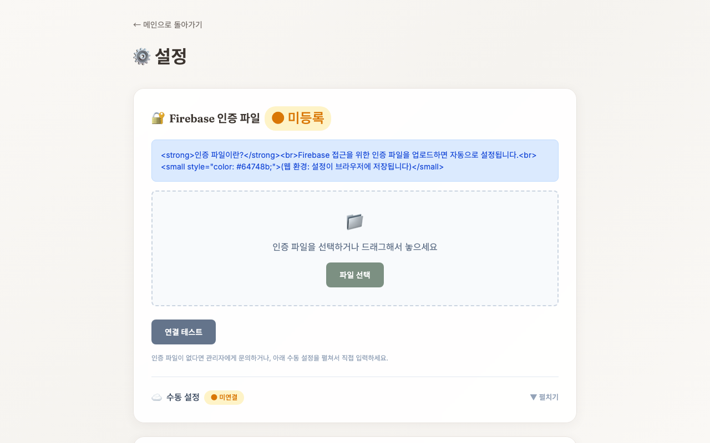
🔐 Firebase 인증 파일 데스크톱 앱 전용
클라우드 동기화에 필요한 인증 파일을 등록/삭제합니다. 자세한 내용은 8. 클라우드 동기화를 참고하세요.
☁️ Firebase 수동 설정
인증 파일 카드 하단의 "수동 설정"을 클릭하면 Firebase 설정값을 직접 입력할 수 있습니다. 웹 브라우저 환경에서 인증 파일을 사용할 수 없을 때 활용합니다.
🏢 기관명 설정
메인 화면 하단에 표시되는 기관명을 직접 입력할 수 있습니다. 기본값은 비어 있으며, 사용 기관명(예: ○○시·군 농업기술센터 안전성분석센터)을 입력해 저장하면 메인 화면 하단에 표시됩니다.
📤 데이터 마이그레이션
로컬 데이터를 Firebase 클라우드로 업로드합니다. 시료 타입별 개별 또는 전체 마이그레이션을 선택할 수 있습니다.
💾 로컬 데이터 관리
모든 시료 타입의 현재 연도 데이터를 JSON 파일로 일괄 내보낼 수 있습니다.
🗂️ 연도별 데이터 삭제
자료 보관 기한은 3년입니다. 3년이 지난 오래된 자료를 연도 단위로 한 번에 지울 수 있습니다. 한 건씩 일일이 지울 필요가 없습니다.
- 삭제 대상 자동 표시: 올해를 기준으로 3년이 지난 연도(예: 2026년이면 2023년까지(2023년 포함))가 자동으로 선택되고 "3년 경과 · 삭제 권장" 표시가 붙습니다.
- 연도별 건수 확인: 각 연도에 자료가 몇 건 있는지 보여줍니다.
- 보관 연도 보호: 보관 기간(3년) 안에 드는 연도와 올해 자료는 실수로 지우지 못하도록 선택이 잠겨 있습니다.
- 삭제 실행: 지울 연도가 맞는지 확인한 뒤 "선택 연도 삭제" 버튼을 누르면 ① 지울 연도와 건수를 보여주는 확인 창이 뜨고, ② 다시 한 번 입력 창에 '삭제'라고 입력하면 지워집니다. (실수 삭제를 막기 위한 2단계 확인)
ℹ️ 어디에서 지워지나요?
선택한 연도의 자료가 이 컴퓨터 · 클라우드(Firebase) · 앱 자동저장 파일데스크톱 앱 전용 세 곳에서 함께 지워집니다. 클라우드를 사용 중이면 다른 컴퓨터에도 삭제가 반영됩니다.
⚠️ 지운 자료는 되돌릴 수 없습니다
연도별 삭제는 그 해의 모든 자료를 영구히 지웁니다. 삭제하기 전에 "로컬 데이터 관리"의 내보내기나 엑셀 내보내기로 백업해 두는 것을 권장합니다.
🗑️ 캐시 관리
앱의 캐시 데이터를 관리합니다.
- 자동 정리: 매주 금요일에 캐시가 자동으로 정리됩니다
- 수동 삭제: "지금 캐시 삭제" 버튼으로 즉시 삭제할 수 있습니다
- 캐시 상태: 캐시된 데이터 건수, 크기, 마지막 정리 시간을 확인할 수 있습니다
ℹ️ 캐시 삭제 안내
캐시를 삭제해도 Firebase 설정 및 연결 정보는 유지됩니다. 시료 데이터에는 영향을 주지 않습니다.
❓ 10. 자주 묻는 질문
입력한 내용이 안 보여요 / 데이터가 사라졌어요
대부분 연도가 다르거나 필터가 켜져 있기 때문입니다. 다음 순서로 확인하세요.
- 화면 위쪽 연도 드롭다운이 올해(예: 2026년)로 되어 있는지 확인하세요. 작년 데이터는 그 연도를 골라야 보입니다.
- 용도 필터와 상태 필터가 모두 "전체"로 되어 있는지 확인하세요. 특정 값으로 되어 있으면 일부만 보입니다.
- 검색을 했다면 검색창을 비우고 다시 조회하세요.
접수번호나 다른 칸을 잘못 눌렀어요 / 잘못 입력했어요
당황하지 마세요. 대부분 그냥 다시 고치면 됩니다.
- 아직 "등록" 버튼을 안 눌렀다면: 잘못 입력한 칸을 마우스로 클릭해 지우고 다시 입력하세요. "초기화" 버튼을 누르면 입력칸이 깨끗이 비워집니다(접수번호·접수일자는 유지).
- 이미 "등록"을 눌러 저장됐다면: 목록 화면에서 해당 줄의 "수정" 버튼을 눌러 고친 뒤 다시 저장하세요.
- 접수번호는 자동으로 만들어지므로 보통 손댈 필요가 없습니다.
"필지", "본필지", "하위필지"가 무슨 뜻인가요?
- 필지: 흙을 채취한 땅 한 구획입니다.
- 본필지: 한 땅의 대표 시료입니다. 접수번호가
503처럼 숫자만 있습니다. - 하위필지: 같은 땅에서 추가로 채취한 시료입니다. 접수번호가
503-1,503-2처럼 뒤에 번호가 붙습니다.
완료 표시는 본필지와 하위필지가 한 묶음으로 함께 처리됩니다.
글씨가 너무 작아요 / 화면을 크게 보고 싶어요
키보드의 Ctrl 키를 누른 채 마우스 휠을 위로 굴리거나, Ctrl 키 + "+" 키를 누르면 화면이 커집니다. 원래대로 돌리려면 Ctrl + 0을 누르세요.
오프라인에서도 사용할 수 있나요?
네, 사용 가능합니다. 모든 데이터는 로컬 저장소에 저장되므로 인터넷 없이도 정상 동작합니다. Firebase를 설정하지 않아도 앱의 모든 기능을 사용할 수 있습니다.
Firebase를 설정한 경우, 오프라인에서 입력한 데이터는 인터넷이 연결되면 자동으로 클라우드에 동기화됩니다.
다른 PC에서 데이터를 보려면 어떻게 하나요?
Firebase 동기화를 설정하세요.
- 기존 PC: 설정 페이지에서 데이터 마이그레이션으로 클라우드에 업로드
- 새 PC: 앱 설치 후 같은 인증 파일을 등록
- 메인 화면의 "전체 동기화" 버튼 클릭
Firebase 없이도 JSON 저장/불러오기로 데이터를 이동할 수 있습니다.
데이터를 백업하려면 어떻게 하나요?
세 가지 방법으로 백업할 수 있습니다:
- JSON 저장: 시료 페이지에서 "JSON 저장" 버튼 클릭 (가장 확실한 방법)
- 엑셀 내보내기: "엑셀 내보내기" 버튼으로 Excel 파일 저장
- 자동 저장: 자동 저장을 켜면 5초마다 JSON 파일이 자동 저장됩니다 (데스크톱 전용)
중요한 데이터는 정기적으로 JSON 파일을 USB 등 외부 저장소에 복사해두세요.
엑셀 가져오기가 안 돼요
표준 서식을 사용하세요. "엑셀 서식 다운로드" 버튼으로 표준 양식을 받은 뒤, 해당 양식에 데이터를 입력하세요.
임의의 엑셀 파일을 사용할 경우 2단계에서 컬럼 매핑을 직접 설정해야 합니다. 지원 형식: .xlsx, .xls
삭제한 데이터를 복구할 수 있나요?
삭제된 데이터는 직접 복구할 수 없습니다. 하지만 백업이 있다면 복구 가능합니다:
- 자동 저장 파일이 있다면 "JSON 불러오기"로 복원
- 이전에 내보낸 JSON 파일이 있다면 해당 파일을 불러오기
중요한 작업 전에는 반드시 백업을 먼저 하는 것을 권장합니다.
새 버전은 어떻게 업데이트하나요?
설치 파일(.exe)로 설치한 경우: 새 버전이 출시되면 자동으로 알림이 표시됩니다. 안내에 따라 업데이트하면 됩니다.
ZIP 파일로 사용하는 경우: 새 ZIP 파일을 다운로드하여 기존 폴더에 덮어씁니다.
업데이트 시 기존 데이터는 그대로 유지됩니다.